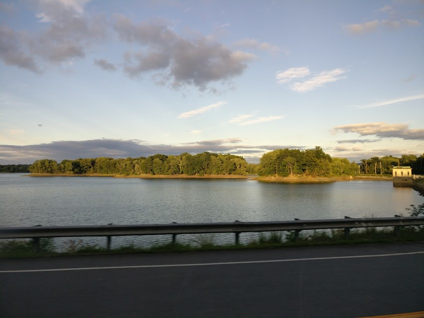

In the summer after my freshman year (2016), I got the opportunity to work for Amadeus North America, in Waltham, on the outskirts of Boston, as a software engineering intern. My work is covered by an NDA, so I'm not allowed to share any screens. However, I would love to talk about what I learnt during my internship, so feel free to drop me an email at tanayvardhan [at] gmail [dot] com.
Below is a picture of the Cambridge Reservoir in Waltham, that I would see as part of my daily commute.
